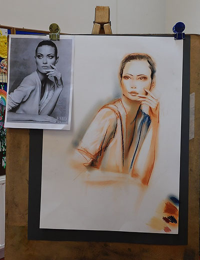
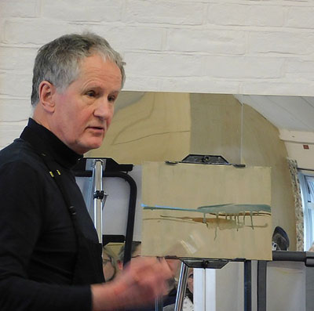
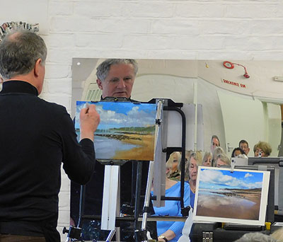
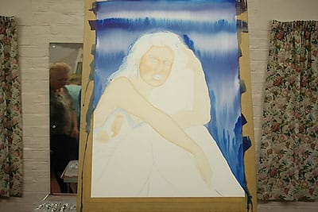
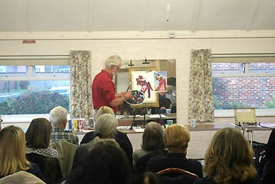
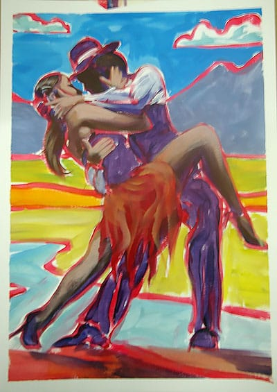

Click here to return to programme page
2019 archive
Sunlit figures in an urban setting by Joel Wareing
Our last demonstration of 2019 was only moderately well-attended, boosted by 9 guests. Joel is a professional artist and tutor from Berkshire.
He showed us the reference photograph he had taken in Italy, and started to work on a piece of black Sennelier pastel card. Joel felt it more important to use a good quality support than very expensive pastels. Initially the scene was very loosely and lightly sketched using a pastel pencil. The importance of holding the pencil at the end to ensure looseness was emphasised. It was also important to simplify things at this stage.
Once happy with the composition, Joel went over it again with the pastel pencil “picking out the right lines” from the first version. He then started to block in the tones, using soft pastels, and ensuring warm colours for the highlights and cool colours for the shadows. Joel classified warm colours as yellow, orange and red and cool colours as blue, purple and dark green. His technique of layering colours, rather than blending them on the page he referred to as “scumbling”. It is important not to go too light too quickly, as you really want the highlights to jump out in the finished painting.
Joel explained the principle that you used thick layers of pastel in the light areas, he was happy at any stage to return to using pastel pencils to work in the cool shadows. It is important to remember when applying skin tones that they should also be warm in the sunlight and cool in the shadows.

While happy to use black pastel, it is important not to overdo it, as it can make your painting look flat. Lost and found edges were explained. In essence it is important not to have too many sharp edges in the painting.
Decide early on the focal point of the painting and ensure that it is the area most worked on. Use white pastel sparingly in the highlights.
It was fascinating to see details begin to emerge and the bicycle in particular seemed to suddenly appear from nowhere. Joel completed a very striking painting in less than 2 hours, with none of the pastel strokes disguised. A very individual approach to pastel painting.
"No intent to deceive", a presentation by David Henty
There was a record attendance of 52 people, of which half were guests.
David started by talking about his introduction to art, through his antique dealer father. He admitted he was tempted into the world of forgery by the prices commanded by a painting simply because of the name of the artist. He concentrated mainly on 20th Century artists because you can still source the same paints and other materials. It was evident that he took great care to research the materials used by the artist as well as the technique used in the painting. Despite this he was eventually exposed and served time in HM prison in the 1990s.
Since then he has continued to study the techniques of many painters, and has gained a growing reputation as a fine copyist artist. He now exhibits his work in galleries, signed by him on the reverse, and attributed to David Henty. His own prices have now risen.
David brought with him several works in the style of Lowry. On one he demonstrated the technique of ageing the picture by applying a wash over the dried paint. He talked though various other techniques used, including drying the painting in the oven, typing out labels on an old typewriter, before ageing it and applying to the back of the picture.
He then painted a small piece of a couple of figures in the style of Lowry. Apparently Lowry used neat paint from the tube and layered colours to add texture. He did not paint shadows in his paintings because the light in the streets of Manchester at the time was diffused by smog. This was the industrial feeling Lowry was trying to achieve. David also explained that although a block of colour may appear to be one colour, in fact they contain many other colours, mixed on the surface of the canvas.
David took an almost continual stream of questions and answered them all openly. We had to call a close to the proceedings long before the questions ran out. David’s final, and rather sobering comment was that anything that can be made can be copied.
It was a very different session, but it was apparent that the majority of the audience thoroughly enjoyed it.
A Still Life in Watercolour by Liz Steward
The demonstration was very well attended, boosted by 9 guests. Liz is President of our Society and had traveled from Lightwater, Surrey. She is a member of the Society of Women Artists.
Liz started by asking how many of the audience actively use a sketch book. Remarkably few did. She exhorted everyone to use one, especially to plan out the composition before painting it. There were numerous examples of her sketch books for us to look through. She insisted that her students could only use photographs as the reference if they first sketched from the photograph, and then used the sketch to paint from.
Liz shared with us the sketch for today’s painting, and had drawn out the composition on watercolour paper in pencil. She wet the paper and applied washes in several differet colours with a large brush. She pointed out that if you wanted red to show as red you needed to apply it to a yellow background. Applied directly to white paper it appeared as pink.
After thoroughly drying the background with a hair drier, Liz explained that she was going to paint negative shapes. In this case the leaves, and they would define the flowers. When applying the paint she was careful to always soften the non-working edge with clear water on the brush. Most of the colours used were transparent, in order to avoid “mud”.
As an aside she suggested that if you struggled with greens in a landscape, one solution was to take a “tube” green that you like, e.g. sap green, and then add blue to it for the distant greens, yellow for mid distant greens and red for foreground greens.
Liz continued painting during the break , and after started to define the edge of the jug, by applying dark shadows to the plums. She also demonstrated how to cut out a bottle from the background by painting the negative space.
When applying shadows cast by objects, she was careful to merge the shadow into the object itself. Details in the flowers were applied using Caran D’Ache watercolour pencils. Liz shared with us a sketch book containing only paintings done with watercolour pencils. She also explained that varying the marks that you make in a painting, increasing the pattern value, also increases the interest.
The final technique demonstrated was glazing, in this case using blue , to the right hand side of the painting.
By the end of the afternoon, Liz had achieved a remarkable watercolour painting in a very short time. Everyone was engaged, entertained and educated. A great restart to our demontration programme after the summer break.
Clothed Figures in Pastel by Debbie Hinks
Despite a temporary change of venue, to St Andrews Church Centre, the demonstration was well attended, boosted by 10 guests. Debbie is a professional artist and illustrator, and has taught at Northbrook Colllege. She now runs life drawing classes and sessions in the Brighton area.
Debbie gave us a summary of her career to date, sharing examples of her illustration work. It is amazing how large the original work is, before being reduced to book cover size.
After a brief description of her materials, Debbie warmed up for the main event, by demonstrating a portrait in charcoal. She explained that in addition to the usual willow charcoal, she used condensed charcoal (more intense/darker) and even white charcoal. She worked on grey Fabriano Tiziano paper, and used an interesting technique with cotton wool to apply charcoal dust for subtle toning on the face.

Debbie then started to work on the details with charcoal pencils. She sharpens all her pencils with a scalpel to achieve the point she wants. A plastic rubber is used to lift off, and can also be shaped for fine work. By the break she had completed a very striking image.

After the break Debbie started to work on a figure drawing, using a piece of off-white Fabriano Tiziano paper. Initially she used a sanguine Conte pastel pencil to compose the figure on the page. Once happy with the composition she rapidly sketched out the main elements, using relative angles and paying partcular attention to the negative spaces. She then took care with the face, especially the eyes. Again the cotton wool was used to apply tone to the face and the picture as a whole. She switched from the peach /burnt sienna colours to a dark blue to add in the darks and the image started to appear three-dimensional.

Highlights were added and Debbie used a cotton bud to apply tone with more precision. In a suprisingly short time a finished image appeared before our eyes.

Debbie engaged with the audience throughout the presentation, and everyone seemed to enjoy the session. Many said that they had learnt new skills. A thoroughly enjoyable afternooon for our last demonstration before the summer break. See you again in September.
A City Night Scene in Watercolour by Jo Louca
The demonstration was very well attended, boosted by 12 guests. Jo is a professional artist from Surrey with a BA Hons in Fine Art. She paints in both oils and watercolour
Jo worked horizontally on a heavy watercolour paper that had not been stretched. She had brought her own overhead projection system which allowed everyone to see her working. The scene had been drawn out in pencil and masking fluid had been used to preserve a very few small areas to ensure maximum brightness when removed.
There were a number of figures in the scene and Jo had ensured that while the figures decreased in size as they went away fom the viewer, all the heads were on approximately the same level. She rapidly covered the top area of the picture in a wash and painted in darker areas to suggest windows. “You don’t need things to be too neat”. She then proceeded to spatter in the tree while the background was still wet. As a night scene the foliage was rendered in shades of blue rather than green.
Jo then washed in the shop fronts and fascias. Some were painted in black horizontal stripes to give the impression of closed shutters. She was careful to ensure that the tree foliage went over the shopfronts to avoid cutting the picture in half. When rendering the banners and fascias it was important not to be too detailed with the writing. If you can read them the eye is drawn to the words in the painting.
When painting the figures Jo was careful to retain a halo around figures against a dark background. Lucky accidents do happen and at this stage a “lucky ear” appeared and one of the figures donned a hoodie. Both were retained. The car, traffic lights and street light were painted in dark, although a surrounding area was left lighter to imply the glow of the light.
Some time was spent painting the reflections. The colours in the clothing of the nearest figures was then adjusted to provide a sense of solidity. Finally the masking fluid dots were removed to expose the white paper; the brightest areas in the car headlights, street lamp and traffic lights.
Jo engaged with the audience throughout and was both informative and entertaining. It was helped by the fact that she was facing us the whole time, with the image of her work projected behind her. It was evident that the colours of the painting were brighter and more vivd than the projected image.
A portrait in oils by Tony Parsons
The demonstration was very well attended, boosted by 15 guests.
Tony is a local artist from Brighton. He paints every day and has previously worked as a caricature artist. He has a long association with the sea, and currently drives the Brighton life boat and lives on a boat.
Tony agreed to work from a photograph, taken on the day, of a brave volunteer, Elaine. He stressed that while he had no problem with working from a photograph, it would inevitably produce a different result than working from life.
He talked through his limited palette and stressed the importance of learning how each of the colours behave, especially when mixing. He believes that if you introduce a new colour, it takes at least 6 months of use before you fully understand it. Today he was painting on a canvas board and using ZestIt as the solvent. The board had been primed with gesso, coloured a light grey with paynes grey, and containing Polyfilla dust.
We were warned that there would be no pre-drawing. Chaos was the starting point and hopefully a likeness would appear. Without any predrawing, Tony applied areas of dark tone to the canvas. It was definitiely difficult to spot a likeness a this stage.

Tony then started to apply areas of highlight, again using a large brush. He constantly referred to the importance of tonal value. “Tone does the work, and colour gets the credit”. By the break for tea, a likeness was beginnng to emerge. This was likened to a nervous wild animal. “Take great care not to lose it, once it has been captured.”

After the break Tony switched to a smaller, softer brush. The ZestIt had evaporated from the earlier painting and it was possible to paint over it, although you only had a couple of brush strokes before the layers would blend producing mud. He repeatedly walked a long way back from the painting to review the progress, explaining that he did not want to get bogged down in the detail.
Managing to combine painting with a constant explanation of what he was doing, Tony worked all over the painting. Never focussing on one area the image began to emerge. Almost the final stage was to apply a dark green background, pushing the face forward. In common with all Tony’s work there was a real sense of light in the work. Elaine certainly seemed pleased - she bought the final picture.

"Heaven, ocean, earth" a landscape in oils by Paul Simmons
The demonstration was very well attended, boosted by 20 guests.
Paul travelled from Surrey, and gave a brief summary of his career, including an inspiring story about a picture sold as prints by Ikea. He used a canvas board pre-prepared with a neutral ground, to avoid painting on a white background. The paints used were from SAA and Paul went through his limited palette, which did not include any pre-mixed greens or black. The solvent used was Zest-It mainly to avoid the smell of turpentine or linseed oil. Filbert hogs hair brushes were favoured.
The reference was a photograph of a beach scene at Woolacombe, North Devon. Paul had taken the photograph himself, and felt it was important to have an emotional attachment to the subject.
Without any pre-drawing, Paul started to paint in the image, using a high level of solvent on the first coat. He was not worried that this caused runs, as he felt able to incorporate the texture into the painting. The sky was the first section and movement with the brush on application helped to give a feel of movement in the clouds.

Paul’s aim was to cover the whole canvas with paint by the break. He explained the principle of “fat over lean”. The solvent in the early layers evaporated off allowing him to work over it again later. He also demonstrated the use of his “home-made” mahl stick, to provide support working over wet areas of the picture.The sky was “nailed” by the tea break.

After the break Paul worked on the sea and reflections. He allowed his eye to roam all over the reference picture, and by keeping a separate brush for each of the major colours was able to avoid the distraction of continually cleaning the brush. A darker tone in the foreground helped to anchor the picture. He stressed there was no need to slavishly copy the reference. He also felt that it was difficult to judge your own painting when you have just completed it.
In the final stages Paul moved to a rigger brush to work on highlights and the darks.
During questions at the end he demonstrated his system for transporting oil paintings when they are still wet, a variation of the pochade box.

"Painting a fantasy face in watercolour" by Sharon Hurst
Despite the dismal weather the event was well attended. There were only just enough seats for everyone, including 10 guests.
Sharon travelled from Hampshire and was clearly full of enthusiasm for both her subject matter and medium. The support she used was Bockingford NOT 140lb paper that had not been stretched, but was firmly secured with good brown adhesive tape. The paints used were mainly Shin Han watercolour tubes.
The subject for the day had been drawn out in pencil, and the head had been masked with blue masking fluid. One of her trade mark backgrounds was then rapidly applied with a large brush to a very wet paper. Despite working almost vertically, no runs or drips occurred.

Sharon then demonstrated her basic skin tone mix Burnt Sienna with a touch of Alizarin Crimson and toned down with a touch of Burnt Umber. A great deal of water was then added to create the face skin tone wash. The face and arms of the subject were given a quick wash. We were told for not the last time not to touch it when it’s wet. Shaping was applied to the dried surface with a slightly stronger mix of the same wash. A two brush technique was demonstrated – one for the paint and one for the clean water. Sharon went into detail of the anatomy of the face, and how a portrait painter can apply large shapes to quickly gain a convincing likeness.

After the break Sharon started to paint in the features. Using a smaller brush and all the time telling the audience what she was doing and why. We were treated to a lesson on anatomy as well as painting.

Much of the material that Sharon referred to and used is available to view or download on her website http://www.sharonhurst.co.uk/
By the end of the session Sharon had achieved a very convincing image of an attractive young woman. She explained that many more washes and attention to detail would be needed before completion.
The audience were engaged, informed and entertained. Thank you Sharon for an excellent start to our demonstration programme for 2019.

"Figures in acrylic" by Marcus Finch
There was an excellent turn out to see Marcus demonstrate, bolstered by 14 guests. This may be a record number for recent years.
Marcus introduced himself, providing a brief history of his career. Most recently he has been teaching in the West Sussex area. He then anounced that he was going to paint not one but two pictures in the two hours available.
Marcus urged us not to spend a lot of money on materials. Plastic lids as palettes and reasonable brushes from Seawhites were to be used for this demonstration.
He stressed that he would not be striving for photo-realism. Rather he would emulate the style of Jack Vettriano, whose work he admired. For his first painting Marcus created a dark vibrant background by applying the paint with circular motions of the brush. He then put this to one side to dry.
For the second painting Marcus used a reference photograph of a couple dancing the tango. He stressed the importance of placing the reference parralel to your work. He also demonstrated how to check that the rectangles of the reference and the work are of the same relative dimensions. He then took a great deal of time showing how to draw out the subject using angles, measurement and shapes to produce an accurate repesentation.

After the break Marchus painted over his pencil lines in red, creating a strong outline of the image. He then laid in the darks starting with a dark mix of french untramarine and burnt umber. He then overpainted this purple with gradually lighter mixes to achieve skin tones and other details. All the time he was careful to leave the red outline visible.

Finally Marcus added an imaginary background. By eliminating the white he hoped to make the highlights of the painting more pronounced. The finished painting was completed with rather less than 20 minutes of the available time remaining.

Marcus then returned to the background prepared at the beginning. Using a refence of two flamenco dancers, and no preparatory drawing he proceeded with another painting. White was applied with a square brush to capture the highlights. Mid tones were added in brown, and then the darks. Finally a bright red was used to capture the skirt in movement. In a little under 8 minutes the painting was completed.

Our thanks go to Marcus for a thoroughly entertaining and informative afternoon. A great way to finish our demonstration programme for 2018.